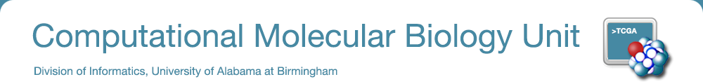

CB2-101: Bioinformatics computing (Introduction to Scientific Computing) (Last edition)
Note: 2021 will be the last time this course will be offered.
Best course at UAB. Period.
- Anonymous student review
CB2-101 is our flagship course. This is a very highly-rated, fast paced, intensive and demanding, workshop-style course designed after NSF immersion learning proposal. The goal is not to make you an expert in bioinformatics, but to make you competent in carrying out bioinformatics research. The emphasis in on skills, not on theoretical expertise. The course is a registered graduate course with full 3 credits, but taught in just 12 working days. The course is designed in such a way so that the participants should be immersed in the material and dedicate full time in the duration of the course.
The 2021 course is going to start soon. The course is free for everyone. No computing experience necessary. Contact malay@uab.edu for more information.
Dates: Nov 4 - 19, 2021Split timings 12:30 - 4:30PM Tuesdays and Thursdays, 9:00 AM - 1:00 PM otherwise.
I apologize for these unusual timings. The pandemic destroyed my original reservation for this room and I was not informed. Note: The course has a soft start. Optionally, the course might have an online component that could be decided based on demand. I strongly urge you enroll in Slack as soon as possible.
Location: Volker Hall VHG073
| Registration form | Please register first using this form then proceed to Slack registration. For credits, you need to register officially through blazernet in addition to this form. The course is listed on blazernet as GBSC 703-VTD CB2-101: Bioinform Computing. If you have missed the deadline, contact you graduate course coordinator and see whether you can still register for the course. We used to have a mechanism for delayed credit earning for this course. Because this the last time CB2-101 will be offered at UAB, this is no longer possible. Contact course director for more information. |
| Slack workspace. | Course info and discussion forum. We also use this platform for all communications inside and outside of the class. If you have not joined already, join by clicking here. Make sure that you have subscribed to cb2-101-2021 channel. |
| Syllabus | A general outline of the course. Note that this is just an outline, the actual materials generally get adjusted based on participant learning pace and interest. |
| Anthem of CB2-101 | Computer Love, Album: Computer World, Kraftwerk (1981). |
| Github repository | Course materials source code and binaries. |
| Course disk image | CentOS 7 (64bit) VirtualBox disk image, compressed with xz. Unzip the file using 7zip, if you are using Windows. If you are using Mac, you can use Unarchiver. If you are on Linux, use xz.. Even if you are using Linux, I suggest that you use the disk image for the class. This will make troubleshooting easy. If you are using M1 Mac, contact me beforehand. Download the latest version of VirtualBox for your OS here. Install the image in VirtualBox using instructions here. |

| Nov 2020 | Held November 5-20, 2020. |
| Nov 2019 | Held November 1-15, 2019. |
| Nov 2018 | Held November 1-16, 2018. |
| Nov 2017 | Held November 2-17, 2017. |
| Nov 2016 | Held November 3-18, 2016. |
| Nov 2015 | Held November 5-20, 2015. |
| Nov 2014 | Held November 6-21, 2014. |
| Feb 2014 | Held February 17-28, 2014. |
University of Alabama at Birmingham. 619 19th St. South, WP220. Birmingham (AL), 35249 (USA).